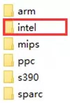
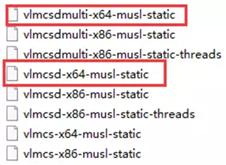

KMS服务器搭建及系统激活
Contents
准备KMS服务器
可以找网上现成的，也可以自己搭建:
1)下载KMS，vlmcsd 或者 vlmcsdmulti 百度/MEGA/github (前两个zip的解压密码为2017)
2)根据实际环境(CPU,32/64)选择运行文件，vlmcsd或者vlmcsdmulti文件均可
  
复制上面选择的文件到Linux中，并修改权限为可执行。
#本地
|
|
#远端
|
|
3）运行vlmcsd并开启端口
|
|
#centos开启端口对外访问
|
|
4）本地端口连通性测试
telnet you.host.ip port #如果能够连通，就可以进行下一步
激活Windows
slmgr命令激活
管理员权限运行CMD或PowerShell
|
|
清除KMS信息
|
|
重启之后按下win+R打开运行，键入：services.msc 点击确定打开服务；
打开服务后找到Software Protection服务，然后按鼠标右键弹出菜单中点击启动命令可清除完成！
vlmcs协助
选择32还是64请根据实际情况来。
|
|
#-v输出详细信息
#-l 3表示发送Windows 10 Enterprise 2016 LTSB的激活请求，具体版本对应列表可以通过./vlmcs-Windows-x64.exe -x查看
如果，你不知道你的系统是什么版本，那么。。。
|
|
激活office
注意只能激活VOL版，如果不是需要转换成VOL版再激活(可以使用附件进行转化)
|
|
序列号
WIN10专业版：W269N-WFGWX-YVC9B-4J6C9-T83GX
WIN10企业版：NPPR9-FWDCX-D2C8J-H872K-2YT43
M7XTQ-FN8P6-TTKYV-9D4CC-J462D
office2016专业增强VL版：XQNVK-8JYDB-WJ9W3-YJ8YR-WFG99
Office Standard 2016：JNRGM-WHDWX-FJJG3-K47QV-DRTFM
Project Professional 2016：YG9NW-3K39V-2T3HJ-93F3Q-G83KT
Project Standard 2016：GNFHQ-F6YQM-KQDGJ-327XX-KQBVC
Visio Professional 2016：PD3PC-RHNGV-FXJ29-8JK7D-RJRJK
Visio Standard 2016：7WHWM-4T7MP-G96JF-G33KR-W8GF4
Access 2016：GNH9Y-D2J4T-FJHGG-QRVH7-QPFDW
Excel 2016：9C2PK-NWTVB-JMPW8-BFT28-7FTBF
OneNote 2016：DR92N-9HTF2-97XKM-XW2WJ-XW3J6
Outlook 2016：R69KK-NTPKF-7M3Q4-QYBHW-6MT9B
powerpoint 2016：J7MQP-HNJ4Y-WJ7YM-PFYGF-BY6C6
Publisher 2016：F47MM-N3XJP-TQXJ9-BP99D-8K837
SKype for Business 2016：869NQ-FJ69K-466HW-QYCP2-DDBV6
Word 2016：WXY84-JN2Q9-RBCCQ-3Q3J3-3PFJ6
版本说明
1 MSDN 版
MSDN(Microsoft Developer Network)软件是微软公司面向软件开发者的一种版本。MSDN 涵盖了所有可以被开发扩充的平台和应用程序，如微软公司的百科全书 Encarta，或者是各种游戏，是不包括在 MSDN 之内的，因为这些产品直接面向最终用户，没有进行程序开发的必要。
MSDN 在 Operating System 以上的等级都有附微软的软件授权，根据 MSDN 的使用者授权合约 (EULA)，软件只授权给使用 MSDN 的那一位开发人员，专供开发与测试之用，其他人不可使用 MSDN 所附软件。包含企业不能用 MSDN 附的 SQL Server Enterprise Edition 做为生产环境中的数据库服务器；秘书不能使用 MSDN 所附的 Office 2013 等等。
2 OEM版
OEM(Original Equipment Manufacturer)软件只能随机器出货，不能零售，所以也叫做随机版。OEM软件只能全新安装，不能从旧有操作系统升级。
如果买笔记型计算机或品牌计算机就会有随机版软件。包装不像零售版精美，通常只有一片cd和说明书(授权书)。这种系统通常会少一些驱动，而且目前的OEM软件很少放在光盘里能给你安装，要么就是恢复盘，要么就是硬盘镜像。
3 RTM版
软件在正式在零售商店上架前，需要一段时间来压片，包装、配销，所以程序代码必须在正式发行前一段时间就要完成，这个完成的程序代码叫做 final.code，程序代码开发完成之后，要将母片送到工厂大量压片，这个版本就叫做RTM(Release to Manufacturing)版。
RTM版的程序码和正式版一样。但是和正式版也有不一样的地方：例如正式版中的oem不能升级安装，升级版要全新安装的话会检查旧版操作系统光盘等，这些就是rtm和正式版不同的地方，但是它们的主要程序代码都是一样的。严格的说这种版本还是属于fpp零售版，需要激活。
4 RC版
从微软的惯例来看推出RC版操作系统就代表正式版的操作系统已经离我们不远了，因为微软操作系统的开发步骤是这样的：内部测试->alpha公测->beta公测->RC(Release Candidate)版->正式版上市；通常微软的RC版本筛选会经历2-3个过程，也就是说微软会推出RC1、RC2或者RC3的操作系统，而随后就是正式版操作系统上市了，因此通常来看RC1版操作系统已经同最终零售版操作系统相差无几了。
5 VOL版
中文即团体批量许可证，根据这个许可，当企业或者政府需要大量购买一软件时可以获得优惠。这种产品的光盘的卷标都带有"VOL"(Volume Licensing for Organizations)字样，就取 “Volume"前3个字母，以表明是批量。这种版本根据购买数量等又细分为“开放式许可证”(Open License)、“选择式许可证(Select License)”、“企业协议(Enterprise Agreement)”、“学术教育许可证(Academic Volume Licensing)”等5种版本，上海政府 VOL 版XP就是这种批量购买的版本。根据 VOL 计划规定， VOL 产品是不需要激活的(无论升级到SP1还是SP2)。
6 FPP零售版
FPP(Full Packaged Product)就是零售版（盒装软件），这种产品的光盘的卷标都带有"FPP"字样，比如英文WXP Pro的FPP版本的光盘卷标就是WXPFPP_EN，其中WX表示是Windows XP，P是Professional （H是Home），FPP表明是零售版本，EN是表明是英语。获得途径除了在商店购买之外，（H是Home），FPP表明是零售版本，EN是表明是英语。获得途径除了在商店购买之外，某些MSDN用户也可以得到。
Author nanshusu
LastMod 2021-08-26